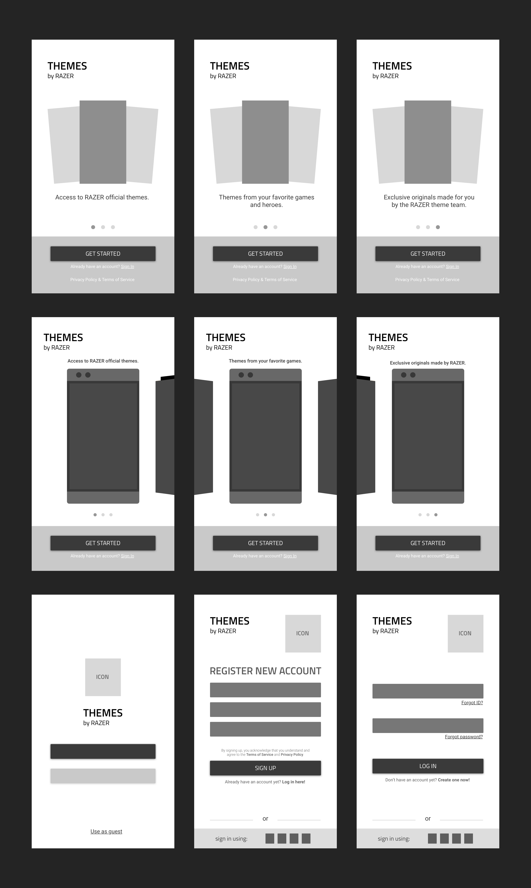
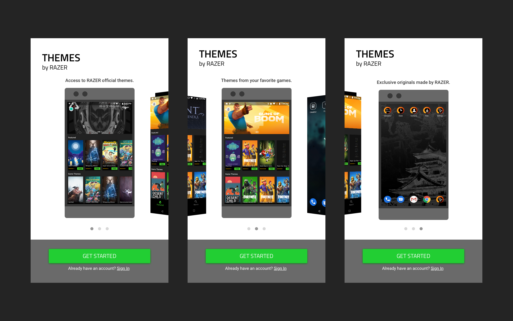
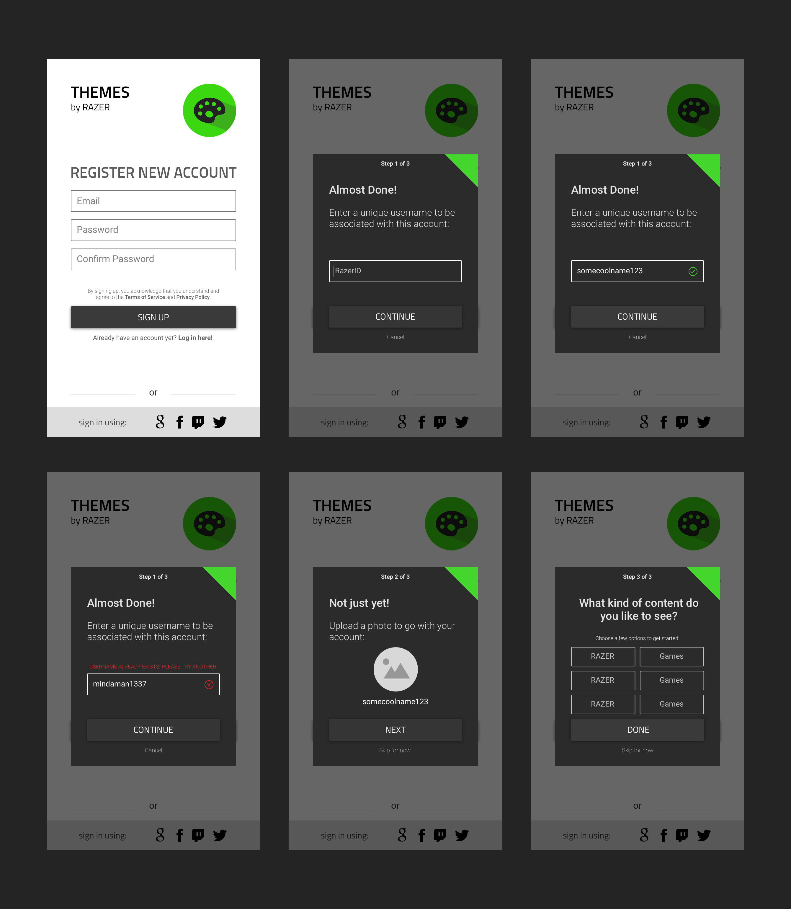
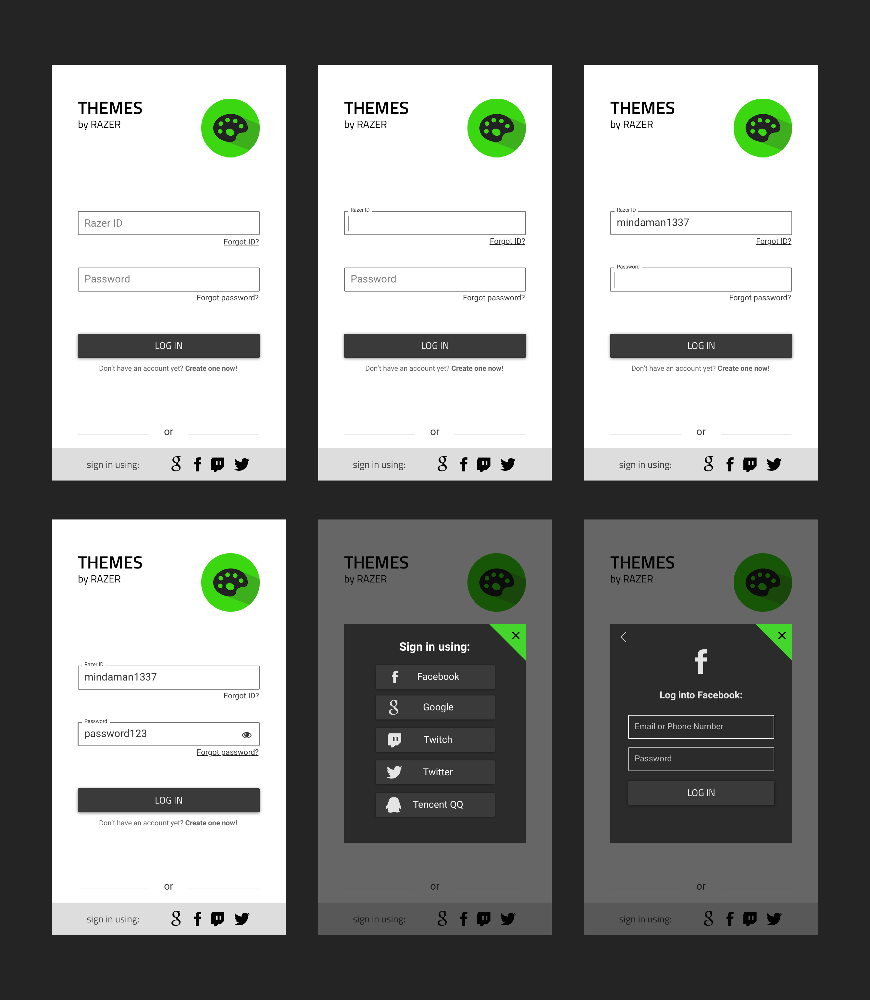
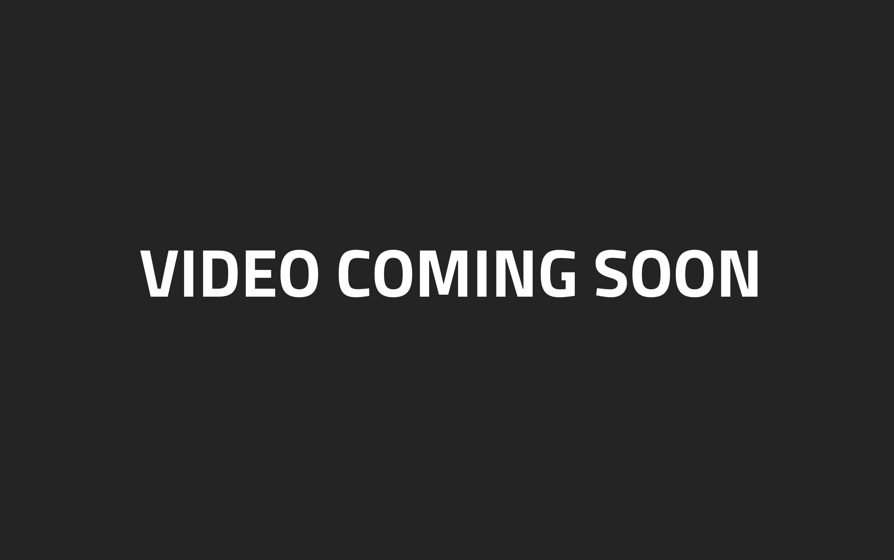

RAZER Phone Themestore
FTUE/FTUX & Login
When I first started working at RAZER, I was mostly tasked with working on specific themes within the Themestore. From creating icon assets to wallpapers and lockscreens, I was one of the main contributors to their theme content.
As most of my time was spent inside themestore, it wasn’t long until I started suggesting the possibility of a Themestore revamp. I got my manager on board as well as the rest of my team, and the product manager for Themestore. From there, I was able explore what we could do to enhance the user's experience of Themestore.
After creating user flows and doing an analysis of the current UI, I had an idea of possible improvements. I pitched these ideas to the PM who ultimately helped me boil it down to working on the first time user experience as top priority as our app does not have this as a part of its current flow.
We also agreed that this is a UX blocker to prospective users who may be wanting to try our Themestore app but has not been convinced to make an account yet thus my idea of presenting them a “preview” of all the goodies we have to offer prior to asking them to sign up with us meant working on the FTUE first. On top of this, we also discussed having a guest login feature.
The side-by-side provides a stark comparison between the current UI and the new design I proposed. The biggest issue with the current design is the use of e-mail address instead of RAZER ID to log in. During sign up users are required to create RAZER IDs which currently aren’t used anywhere else, not even in login.
WIREFRAMES
FTUE/FTUX
SIGN UP
LOGIN
PROTOTYPE
FINAL THOUGHTS
My team was really happy with what I accomplished in such a short window of time: from creating current and existing user flows, to pitching the entire UI redesign, to honing in on certain features to work on -- and the feedback I received from the PM for the FTUE & login/signup was two thumbs up. However, after speaking with the engineers and the director of UX at RAZER, they are choosing not to move forward with building it out. The reason being that the current login and signup is a part of the mobile kit that our RAZER phones use; meaning, the login and signup is the same in all the other included apps therefore we can not touch it for the time being until something changes.
Although we can not move forward with the login and signup build, the FTUE/FTUX is still something feasible that can be built and pushed out within the next quarter. What I'm currently working on for it now is creating the animations to show the engineer how a user should interact with it. I can't show you that now, as it's still more on the *hush hush* side but when I can, it will be up above! Promise! The next step would be to refine my animation video with final touches and getting it built/published before looking at the metrics with my team @ Razer :)
Thanks for checking this project out
- Amy